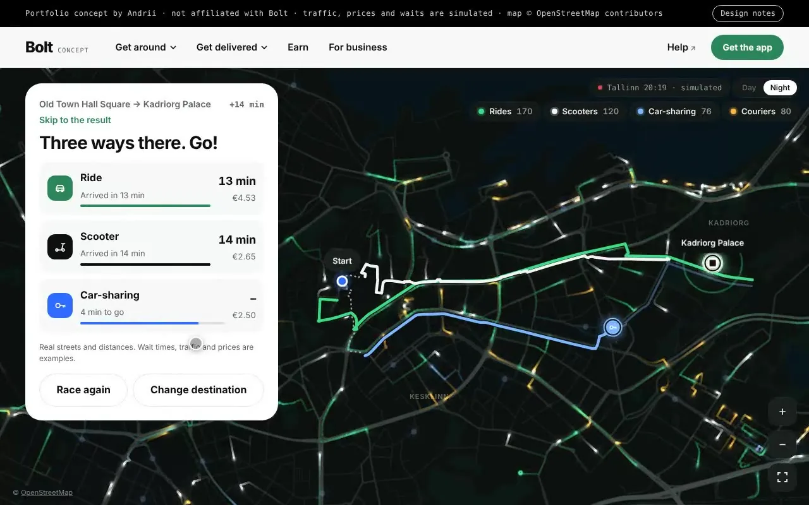
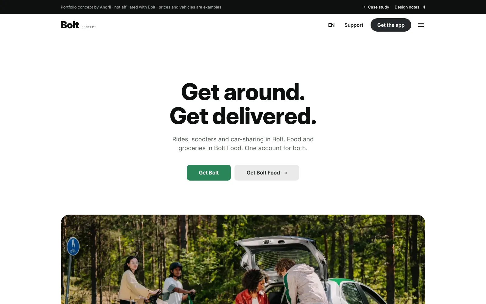

02Answers before the app· bolt.eu redesign · unofficial concept
“What will my airport ride cost?”
Every question a first-time visitor brings to bolt.eu ends in the same QR code. I redesigned four pages in Bolt’s own style so that each one answers first.
- Role
- UX audit of eight pages, page structure and content, visual direction in Bolt’s style, prototype review.
- When
- October 2026
- Built with
- Figma (tokens, components, handoff), HTML, CSS, JavaScript, OpenStreetMap data
- Status
- Independent concept, not affiliated with Bolt
- Development
- Prototype built with AI-assisted coding using Claude.
- Problem
- On eight pages, every rider button opens one QR dialog that knows nothing about you.
- What I did
- A fare range for your own route and a map of what is near, in Bolt’s own style.
- Where it stands
- Audit and coded prototype. Not tested with visitors.
01The question
A brochure that sends you away to act.
I reviewed eight English pages of bolt.eu on desktop and mobile, plus the header, menu and footer. Every rider button opens one dialog that does not know the product, the city or the price.
This is a content and UX audit of the live site, not research with real visitors. Each finding is a hypothesis I would check against Bolt’s own data first.
- 6different main button labels across 8 product pages
- 2 of 8pages let a visitor do anything without the app
- 0pages estimate the visitor’s own trip
02Three answers
03The turn
My first version solved the problem and lost the brand.
Version 1 answered every question on a dark, app-like city map. It worked, but next to bolt.eu it no longer looked like Bolt. A public page has to be recognised in a second, so I audited Bolt’s house style and rebuilt every page inside it.


04Why it is like this
Most of what looks like a problem has a reason.
Before changing anything I wrote down why bolt.eu probably works the way it does. No fare on the page: prices move with demand, and a wrong number is a legal risk. So the concept shows a labelled range, and markets that cannot show estimates get a static “from” table in the same component.
The full case walks through every finding, the handoff file in Figma and what I cut.
The long version, for those who want every finding (opens in a new tab)